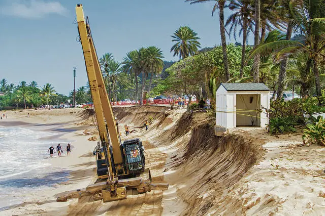
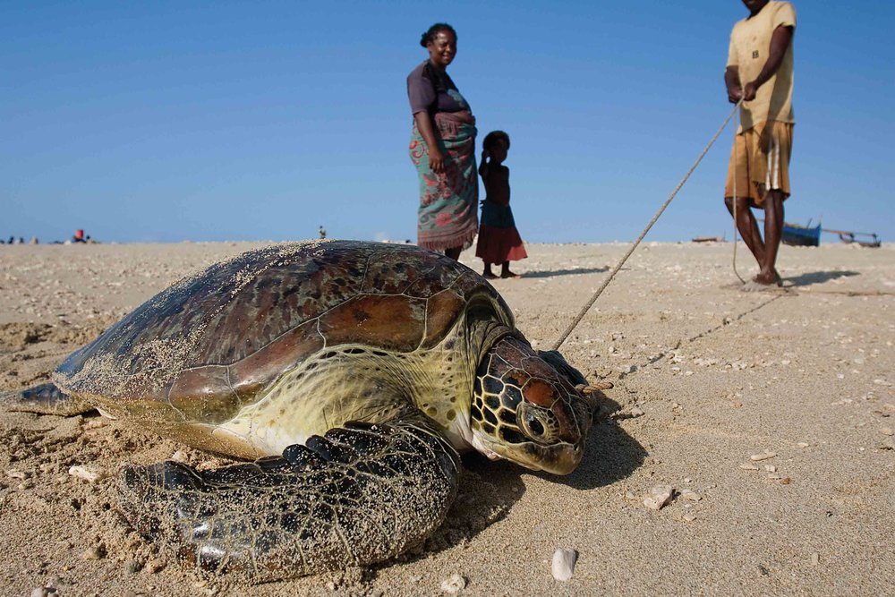

POLLUTION AND PATHOGENS
Sea turtles are harmed by marine pollution in a number of ways. Sea turtles are injured by ingestion and entanglement due to plastic pollution, fishing gear left behind, petroleum byproducts, and other debris. In addition to disrupting nesting behaviour and hatchling orientation, ocean pollution can impair the turtles' immune systems. Sea turtles are more prone to illness and demise due to pollution exposure.

How to Prevent
The best ways to reduce pollution are still to reduce, reuse, and recycle. The more efficiently you use what you already own and the less single-use products you consume, the better. Change from disposable plastic bottles to reusable metal or plastic bottles and from disposable plastic bags to reusable cloth bags.
COASTAL DEVELOPMENT
The habitats of sea turtles are being destroyed every year as a result of receding coasts. Sea turtle food sources and nesting areas are severely impacted anywhere there is boat vessel traffic, anytime a new hotel or high-rise is built up along the shore, and everywhere the sea floor is dug up and the beach erodes. The life cycle of sea turtles is impacted by coastal development in numerous ways.

How to Prevent
Sea turtles and other creatures share coastlines with us, making them precious places. We can contribute to preserving these areas' vitality and health for future generations by choosing better ways to use them.
DIRECT TAKE
Turtles are murdered and sold as unusual cuisine, oil, leather, and jewellery on the international market. Millions of hawkbill turtles alone have been slaughtered over the past century only for the value of their shells. And even if today's global trade in upscale and handcrafted goods has decreased as a result of conservation measures, turtles are nevertheless constantly at risk from it. Because of this they are now extinct.

How to Prevent
Around the world, sea turtles are killed for food and for profit, both officially and illegally. The unlawful international trade of turtle products poses a serious threat to sea turtles in general and hawksbills in particular. The consumer market for sea turtle items can be eliminated with the aid of all of us. Do not consume or buy sea turtle products.